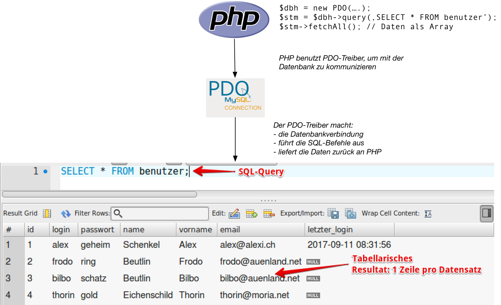
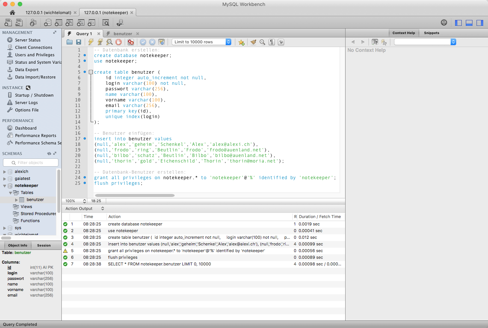
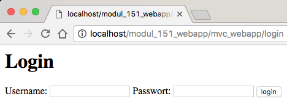

{% extends "../_base_template.html" %}
{% block title %}Lektion 5 - DB-Anbindung{% endblock %}

{% block sections %}
<section data-markdown>
<textarea data-template>
<i class="fas fa-graduation-cap"></i> M151 - DB in Web-App einbinden
=============================

Heutiges Ziel
--------------

* Sie wissen, wie Sie eine Datenbank in PHP anbinden
* Sie wissen, wie Sie Daten aus der Datenbank abfragen und aktualisieren
* Sie können Formulardaten vom Frontend lesen und auswerten.
* Sie können eine Verbindung zur Datenbank in PHP erstellen und Daten abfragen

</textarea>
</section>

<section data-markdown>
<textarea data-template>
<i class="fas fa-graduation-cap"></i> Wie kommuniziert PHP mit einer Datenbank?
=============================



PHP „spricht“ kein SQL: es benötigt also ein „Zwischenstück“, einen Datenbank-Treiber:
Dies erledigt **PHP PDO** für uns: PDO ist ein objektorientiertes Interface zu Datenbanken.

Siehe http://php.net/manual/en/book.pdo.php.

</textarea>
</section>

<section data-markdown>
<textarea data-template>
<i class="fas fa-graduation-cap"></i> Wir erstellen eine Datenbank
=============================

* Datenbank-Verbindung mit MySQL Workbench herstellen
* Demo-Script (example_db.sql): erstellt eine neue Datenbank mit einer einfachen Benutzer-Tabelle:


</textarea>
</section>

<section data-markdown>
<textarea data-template>
<i class="fas fa-graduation-cap"></i> Verbindung in PHP zur Datenbank herstellen
=============================

In PHP hat sich die PDO-Library (PHP Data Objects) etabliert:
Dies ist ein objektorientiertes Interface für Datenbank-Verbindungen.
Damit stellen wir eine Verbindung zur Datenbank her:

```php
    // DB Parameter definieren:
    $dsn = 'mysql:host=mysql;port=3306;dbname=notekeeper';
    $username = 'notekeeper';
    $password = 'notekeeper';
    $options = array(
        // Wichtig: damit die Daten als utf-8 codierte Strings geliefert werden
        \PDO::MYSQL_ATTR_INIT_COMMAND => 'SET NAMES utf8',
    );

    // Datenbankverbindung aufbauen:
    $dbh = new \PDO($dsn, $username, $password, $options);

    if ($dbh) {
        echo "Erfolg! Datenbankverbindung hergestellt";
    }

    // $dbh ist eine Referenz auf ein PDO-Objekt, unser "Handler" zur Datenbank.
```

Nach erfolgreichem Verbindungsaufbau beinhaltet die Variable `$dbh` ein Objekt der Klasse `PDO` (siehe http://php.net/manual/en/book.pdo.php)

**Hinweise:**

* Es macht Sinn, den Verbindungsaufbau an einem **zentralen Ort im Programm** zu machen:
  Die Verbindung wird später an verschiedenen Stellen wieder benötigt.
  Z.B. kann eine Funktion „getConn()“ dafür sorgen, dass die Verbindung geliefert wird oder bei Bedarf erzeugt wird.<br /><br />
  <i class="far fa-hand-point-right"></i> **Welches Design Pattern kommt Ihnen da in den Sinn?**<br/><br/>
* system-spezifische Daten wie Usernamen uns Passwörter **gehören nicht in den Standard-Programmcode**, und sicher nicht ins Software Repository,
  sondern müssen anderweitig zur Verfügung gestellt werden (z.B. in einem eigenen config-Script, ini-File etc…).
</textarea>
</section>

<section data-markdown>
<textarea data-template>
<i class="fas fa-graduation-cap"></i> Daten abfragen: Login-Formular und Prüfung
=============================

Als einfaches Beispiel zur Datenabfrage wollen wir ein Login-Formular erstellen, und das Login in der DB prüfen.

**Schritt 1: Formular mit Login / Passwort-Feldern an Browser ausgeben (Beispiel aus LoginController.php)**

Wir verwenden eine Controller-Action unseres MVC-Frameworks, um ein HTML-Formular mit Login-Feldern auszugeben:

```html
<html>
<body>
    <h1>Login</h1>
    <form action="/login_try" method="POST">
        <label>Username:
            <input type="text" name="login">
        </label>
        <label>Passwort:
            <input type="password" name="passwort">
        </label>
        <button type="submit">login</button>
    </form>
</body>
</html>
```



Beim Absenden („login“-Button) werden die Daten als HTTP-Post an die url „/login_try“ geschickt. Wir können diese Daten nun
in einem 2. Schritt auswerten.

(Demonstration im Browser)

</textarea>
</section>

<section data-markdown>
<textarea data-template>
<i class="fas fa-graduation-cap"></i> Daten abfragen: Login-Formular und Prüfung
=============================

**Schritt 2: Parameter auf der Server-seite auslesen**

Das abgeschickte HTML-Formular „landet“ nun in einem PHP-Script, in unserem Fall in einer Controller-Action-Funktion.
HTTP-Parameter können in PHP folgendermassen ausgelesen werden:

* die globale Variable `„$_GET“` enthält HTTP-GET-Parameter (URL-Parameter)
* die globale Variable `„$_POST“` enthält HTTP-POST-Parameter, wie sie von unserem Formular geschickt wurden

Beispiel-Code (komplettes Beispiel siehe LoginController.php):

```php
public function login_try() {
    // Auslesen der POST-Parameter, "the PHP Way":
    $login    = $_POST['login'];
    $passwort = $_POST['passwort'];
    echo "Ihre Eingabe: {$login}, {$passwort}";
}
```

</textarea>
</section>


<section data-markdown>
<textarea data-template>
<i class="fas fa-graduation-cap"></i> Daten abfragen: Login-Formular und Prüfung
=============================

**Schritt 3: Eingabedaten mit Datenbank-Einträgen vergleichen**

Nun ist es an der Zeit zu prüfen, ob die eingegebenen Daten einem Benutzer entsprechen. Dazu suchen wir den Benutzer-Datensatz
in der Datenbank, dessen Login / Passwort mit den eingegebenen Daten übereinstimmen.

1. wir erstellen / holen die Datenbank-Verbidung wie oben aufgezeigt (Variable $dbh, im Beispiel)
2. wir setzten einen SQL-Query-Befehl an die Datenbank ab:

```php
// PDOStatement erstellen: Query senden:
$stm = $dbh->query("SELECT * FROM benutzer WHERE login = '{$username}' AND passwort = '{$pw}'");

// PDOStatement auslesen: fetch() holt den nächsten Record, fetchAll() holt alle Records:
$result = $stm->fetch();

// Ausgabe des Resultats:
if ($result) {
    echo "<div style='background-color: green; padding: 1em;'>Hallo, {$result['vorname']}!</div>";
} else {
    // oder Fehlerausgabe:
    echo "<p>Ooops, Login-Fehler!</p>";
}
```
**Hinweis zur Sicherheit:**<br />
In diesem Query wurden **keinerlei Eingabeprüfungen** vorgenommen: Auf Sicherheitsprobleme wie SQL-Injection gehen wir zu
einem späteren Zeitpunkt ein. Als Hinweis hierzu sei erwähnt, dass PDO ebenfalls „Prepared SQL Statements“ unterstützt,
welches solche Sicherheitsprobleme lösen kann.

</textarea>
</section>

<section data-markdown>
<textarea data-template>
<i class="fas fa-graduation-cap"></i> Daten aktualisieren: letzten Login festhalten
=============================

Natürlich können wir neben Datenbank-Anfragen zum Daten lesen auch Daten aktualisieren.
Wir wollen für dieses Beispiel den Benutzer-Record des eingeloggten Benutzers aktualisieren,
sodass der Zeitpunkt des letzten erfolgreichen Logins festgehalten wird.

**Schritt 1: Wir erstellen ein UPDATE-SQL-Query**

Wir aktualisieren die Spalte `„letzter_login“` des vorher abgefragten Benutzers:

```php
$updateQuery = "UPDATE benutzer SET letzter_login = now() WHERE id = {$result['id']}";
```

`now()` steht hierbei für „jetzt“, während dem wir die ID des zu aktualisierenden Datensatzes aus dem vorherigen
Resultat lesen.

**Schritt 2: Wir senden das Query an den Datenbank-Server**

Wir verwenden wiederum unsere Datenbank-Verbindung, rufen nun aber anstatt „query()“ die Funktion „exec()“ auf:
exec() wird bei Anfragen benutzt, welche kein Resultat (keine Abfrage) liefert:

```php
$res = $dbh->exec($updateQuery);
if ($res) {
    // alles OK, kein Fehler aufgetreten, und weiter gehts!
}
```

**Schritt 3: Wir kontrollieren den Vorgang**

Wir können nun den Datensatz nochmals auslesen, um das aktualisierte Datum abzuholen:

```php
$readQuery = "SELECT * FROM benutzer WHERE id = {$result['id']}";
$result = $dbh->query($readQuery)->fetch();
$lastLogin = $result['letzter_login'];
```
</textarea>
</section>

<section data-markdown>
<textarea data-template>
<i class="fas fa-graduation-cap"></i> Kommunikation Frontend-Backend: Formulardaten senden, Parameter auslesen
=============================

Nächstes Kapitel auf [separatem Foliensatz](unterricht_teil2.html):

**Ziel**: Sie verstehen, wie das Senden von Daten vom Browser zum Server funktioniert, und wie Sie
diese Daten in PHP (Serverseite) auswerten.

Lesen Sie selbständig das Kapitel rund um Formulardaten senden und Parameter auslesen mit PHP!
Bei Fragen wenden Sie sich an mich!
</textarea>
</section>
{% endblock %}
